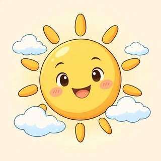

If & Imagining — Classroom Materials
Everything to print for Classes C4–C6: picture flashcards (life hacks & superstitions, dreams & dilemmas, small wishes), "imagine a person" identity cards, the teacher's listening scripts, the Life Hacks & Superstitions card sort, the conditional-plans and advice role-plays (A/B), the dilemma cards, the Small Wishes, Real Fixes cards, and the Wish Mingle (Find Someone Who).
What to Print
| Set | What | How many | Used in |
|---|---|---|---|
| A | Picture flashcards (life hacks & superstitions, dreams & dilemmas, small wishes) | 1 set for the board | C4, C5, C6 |
| B | "Imagine a person" identity cards (6) | 1–2 sets, on a side table | C4, C5, C6 |
| C | Listening & dictation scripts | Teacher only | C4, C5, C6 |
| D | Life Hacks & Superstitions card sort (32 half-cards + 3 headers) | 1 envelope per group of 3 | C4 |
| E | Conditional-plans role-play A/B | 1 A/B pair per pair | C5 warmer |
| F | Dilemma cards (12 + 2 blank) + reaction-phrase strips | 1 set per group of 3–4 · 1 strip per learner | C5 |
| G | Advice role-play A/B ("If I were you, I'd…") | 1 A/B pair per pair | C5 (and C6 warmer) |
| H | Small Wishes, Real Fixes cards (16 + 2 blank) | 1 set per pair | C6 |
| I | Wish Mingle — Find Someone Who (game) | 1 per learner | C6 |
A · Picture Flashcards — Life Hacks & Superstitions (2.1)
Use them in the lead-in and the "finish my sentence" drill: hold up a card, say the if-half, learners finish it. Literacy-support learners use these 8 picture sentences in the card sort.


A · Flashcards — Dreams & Dilemmas (2.2)


Real-or-dream cards for Script 2.2-B: print one pair per learner (or learners write 1 and 2 on scrap paper).
A · Flashcards — Small Wishes (2.3)



B · "Imagine a Person" Identity Cards (2.1 · 2.2 · 2.3)
Any learner may use a card instead of their own answers, in any task: no reason needed. In 2.1 they use the habit and plan lines for "My six predictions" and the discussion. In 2.2 they use the dream and dilemma lines. In 2.3 they use the small wishes line for the Wish Mingle and Small Wishes, Real Fixes. The cards are deliberately light: jobs, habits, weather, skills, the commute.
Marta — nursing assistant (night shift)
Habit: When I finish a night shift, I sleep until noon.
Plan: If I get Saturday off, I'll go to the farmers' market.
Dream: If I won the lottery, I'd open a small bakery. Superpower: I'd stop time, and then I'd sleep more!
Small wishes: I wish it were warmer at night. I wish I could sing. I wish the night bus would come more often.
Kwame — warehouse worker
Habit: If I drink coffee after 4 p.m., I can't sleep.
Plan: Unless it rains, I'll play soccer on Sunday.
Dream: If I could have any job for a day, I'd be a soccer coach. Wallet: I'd take it to the police station.
Small wishes: I wish I lived closer to work. I wish I could cook like my friend Ade. I wish my roommate would do the dishes.
Hye-jin — hairdresser
Habit: When a customer is nervous, I talk about movies.
Plan: When I get home tonight, I'll watch my favorite show.
Dream: If I were a famous singer, I'd sing in a big stadium. Superpower: I'd speak every language.
Small wishes: I wish it were sunny. I wish I could swim. I wish the train weren't so crowded.
Omar — bus driver
Habit: If traffic is bad, I listen to music.
Plan: If I finish early on Friday, I'll take my kids to the park.
Dream: If I won a free vacation, I'd go to the mountains. Wallet: I'd look for the owner online.
Small wishes: I wish drivers would be more patient. I wish I could play the guitar. I wish it weren't so hot in the summer.
Lupe — cook in a school cafeteria
Habit: When I cook rice, I wash it three times.
Plan: If the weather is nice on Sunday, we'll have a barbecue.
Dream: If I had more money, I'd open a food truck. Superpower: I'd be invisible, so I could eat cake in secret!
Small wishes: I wish I had more free time. I wish I could dance salsa. I wish bus tickets were cheaper.
Viktor — retired teacher, library volunteer
Habit: When I can't sleep, I read a book.
Plan: Unless I'm tired, I'll walk to the library tomorrow.
Dream: If I could fly, I'd fly over the city every morning. Found $20 too much change: I'd give it back.
Small wishes: I wish my phone were easier to use. I wish I could draw. I wish the dog next door would stop barking at 6 a.m.
C · Listening & Dictation Scripts (teacher reads aloud)
Read at a natural speed (B1 learners need real rhythm), with short pauses. Read each script twice: once for the main idea, once to check. Use the contractions (I'll, won't, I'd, wouldn't) and let the if-clause rise and the result fall. The 🔊 buttons in the online lessons give learners extra listening at home.
2.1-A · Tip Time radio show (Workbook 2.1, Ex 1: complete + H / S / F)
Answers: 1 doesn't boil over (H) · 2 gets soft again (H) · 3 charges faster (H) · 4 you'll have bad luck (S) · 5 you'll get (some) money soon (S) · 6 will start at two (o'clock) (F) · 7 won't go out (on the lake) (F). Follow-up: the superstitions use will because people say them like predictions. Also accept "won't boil over" in 1.
2.1-B · Dictation (read each sentence 3 times; learners check the comma)
2.2-A · Sam and Rosa daydream (Workbook 2.2, Ex 1: two voices, or ask a confident learner to read Rosa)
Answers: 1 F (Rosa would travel for a year; Sam would buy a little house by the sea) · 2 T · 3 T · 4 F (If I were you, I'd take it.) · 5 T · 6 T. "I'd" sentences: I'd quit my job · I'd travel for a whole year · I'd buy a little house by the sea · I'd take it · I'd say yes right away. Point out the last line: "If I like it, I'll say yes" is a first conditional: now it's real!
2.2-B · Real or dream? (learners hold up "1st · REAL" or "2nd · DREAM")
Answers: 1 first · 2 second · 3 first · 4 second · 5 second (advice) · 6 first · 7 second · 8 first. Listen for 'll vs 'd: that is the whole difference in sound.
2.3-A · Maya and Leo on a gray day (Workbook 2.3, Ex 1: two voices)
Answers: 1 were · Maya · 2 would · Leo · 3 lived · Maya · 4 could · Leo · 5 were · Maya · 6 would · Leo. Bonus: "If only I had the money…" (Maya, if only + past). Adapted from the online lesson with American English (gray, soccer, roommate).
2.3-B · Dictation (read each sentence 3 times)
D · Life Hacks & Superstitions — Card Sort (2.1)
- Match each if-half (white) with a result (gray). Make 16 sentences. Tip: look at the verbs.
- Sort your sentences under the three header cards: 🔧 Always true · 🍀 Superstition · 📅 One real future.
- Talk (1 token = 1 turn): Do you believe it? Have you tried it? Do you know another life hack or superstition? You can talk about one from a movie or a book, or say "Pass."
- Write 2 real life hacks with If… / When… on sticky notes for the Life Hack Wall.
If / When + present, present
Zero or first? Why?
If + present, will
Cut on the dashed lines and shuffle. The page shows each pair side by side for the teacher only. Answers and sorting: see the Module 2 answer key.
E · Role-Play — Plans with Conditions (C5 warmer · review of 2.1)
Pairs, face to face. A invites; B answers with conditions. Then B invites and A answers. Goal: agree on one plan. Listen for "if … will" errors for the feedback stage.
Invite B — then answer with conditions
1. Invite B to one of these. Ask: "Do you want to…?"
- 🌳 a picnic in the park on Saturday afternoon
- 🎬 a movie on Sunday evening
- 🛒 the farmers' market on Saturday morning
Listen to B's conditions. Try to find a plan: "OK! If it's sunny, we'll…"
2. B invites you. Answer with a condition:
- You might have to work late on Sunday.
- You're saving money this month.
- Your knee hurts a little after soccer.
Useful: If…, I'll… · Unless…, I'll… · When I…, I'll text you.
Answer with conditions — then invite A
1. A invites you. Answer with a condition:
- You might work on Saturday morning.
- Your car is at the mechanic until Saturday noon.
- You're always tired on Sunday evening.
Example: "If I don't have to work, I'll come. I'll call you when I know."
2. Invite A to one of these. Ask: "Do you want to…?"
- ⚽ a soccer game on Sunday afternoon
- 🍕 pizza after class on Thursday
- 🥾 a hike on Saturday
Useful: If…, I'll… · Unless…, I'll… · When I…, I'll text you.
F · "What Would You Do If…?" — Dilemma Cards (2.2)
- Groups of 3–4. Cards face down. Roles: asker (reads the card), timekeeper (about 1 minute each), reporter. Change the asker every card. Each person has 3 talking tokens.
- Round 1: everyone answers in turn: "If I…, I'd… because…". The options A / B / C help. Your own idea is always OK.
- Round 2: discuss. One token = one turn. "I'd do the same." · "Really? I wouldn't." · "That depends."
- These are imaginary, everyday situations. There is no one right answer. Answer as yourself, as an "imagine a person" card, or invent an answer. Anyone can say "Pass" and take the next card.

_______________________
(light and everyday, please!)
_______________________
(light and everyday, please!)
Reaction-phrase strips (1 per learner)
- If I…, I'd… because…
- I'd probably… / I might…
- That depends. If…, I'd…, but if…, I'd…
- Good question! Let me think…
- Pass, please.
- I'd do the same.
- Me too! / Me neither!
- Really? I wouldn't. I'd…
- Why would you…?
- What would you do if…?
- Let's hear from someone who hasn't spoken yet.
G · Role-Play — "If I Were You, I'd…" (2.2)
Pairs. A reads a small problem with feeling. B gives advice: "If I were you, I'd…" or "If I were you, I wouldn't…". A reacts: "Good idea!" / "Hmm, maybe." / "I tried that!" (then B gives new advice). After 3 problems, swap: B reads problems, A gives advice.
- 😴 I'm always tired in the morning.
- 🔋 My phone battery dies by 3 p.m.
- 📚 I want to learn English faster.
- 🔑 I can never find my keys.
- ☕ My coffee is always cold when I get to work.
- 🐕 My neighbor's dog barks every morning at 6.
React: Good idea! · Hmm, maybe. · I tried that, but… · Thanks, I'll try it!
- 🥪 I spend too much money on lunch.
- 🪴 My plants always die.
- 🙈 I always forget people's names.
- 🧺 My apartment is always messy.
- 😐 I'm bored on Sunday afternoons.
- 👟 My shoes hurt when I walk to work.
React: Good idea! · Hmm, maybe. · I tried that, but… · Thanks, I'll try it!
H · Small Wishes, Real Fixes (2.3)
- A takes a card, reads the situation and makes a wish with feeling. The small gray word is a hint (past / were / could / would).
- B answers in one of two ways. 💭 Dream: "If it were warmer, what would you do?" 🔧 Fix: "If I were you, I'd…" or "If you…, you'll…".
- A reacts or answers. Swap after every card.
- Keep it small and everyday. You don't need to share anything private. Use a card, invent a wish, or say "Pass."


_______________________
_______________________
Model wishes and fixes for every card are in the Module 2 answer key.
I · Game — Wish Mingle: Find Someone Who… (C6)
Photocopy one per learner. Learners stand up, walk, and ask "Do you wish you could sing?" / "Do you wish it were warmer today?" If the answer is "Yes, I do," write the name and ask the extra question (it uses would). One name per box; ask each person only one or two questions, then move on. At the end, report with he / she: "Omar wishes he could play the guitar. He'd play at parties."
| Find someone who… | Name | Extra question |
|---|---|---|
| 1. wishes it were warmer today | What would you do if it were warmer? | |
| 2. wishes they could sing | What song would you sing? | |
| 3. wishes the bus or train came more often | How long do you usually wait? | |
| 4. wishes they could cook a special dish | Which dish? Who would you cook for? | |
| 5. wishes they had more time to sleep | How many hours would you sleep? | |
| 6. wishes they could play an instrument | Which one? Why? | |
| 7. wishes they lived closer to work or school | How would you get there? | |
| 8. wishes their phone battery lasted longer | What would you do with more battery? | |
| 9. wishes it were the weekend | What would you do today? | |
| 10. wishes they could draw or paint | What would you draw first? | |
| 11. wishes a neighbor or roommate would be quieter | What would you say to them? | |
| 12. wishes they could speak one more language | Which one? Why? |
Before the mingle, drill the questions on the board: "Do you wish you could + verb?" · "Do you wish it were…?" and the short answers "Yes, I do. / No, I don't." (not "Yes, I wish."). A "No, I don't" is fine: say "OK, thanks!" and ask someone else. Learners with an "imagine a person" card answer as their card person. In the report, listen for wishes with he / she ("She wish" is a common slip). For literacy support, read the rows aloud first and let learners mark a ✓ and the first letter of the name.